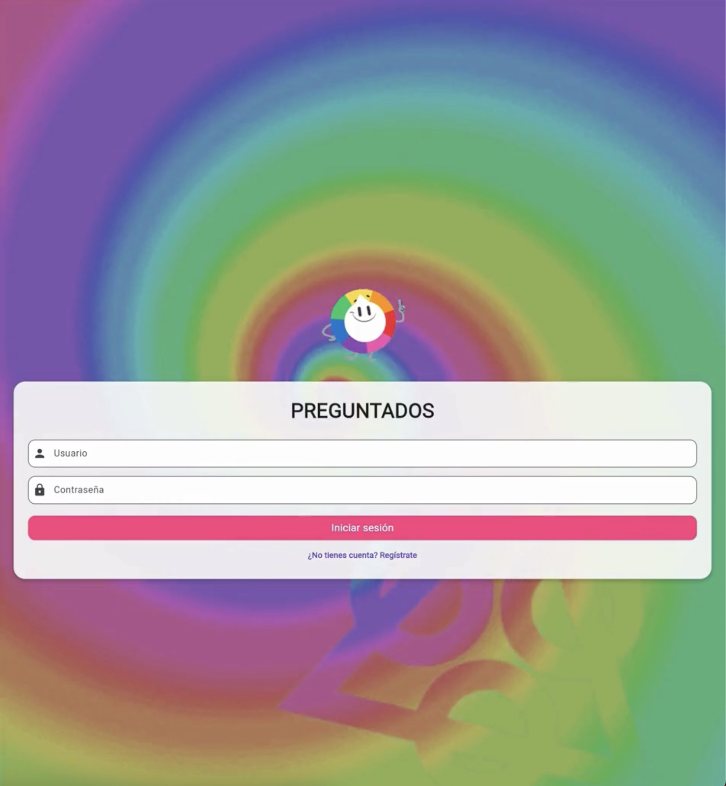

PROYECTOS
Pixel Game Zone
Plataforma de videojuegos estilo pixel-art desarrollada en Java mediante
Programación Orientada a Objetos. El proyecto integra múltiples juegos
interactivos, incluyendo Snake Game, implementando manejo de eventos,
estructuras de control, lógica de colisiones y diseño modular.
Se aplicaron conceptos de arquitectura de software, reutilización de código
y diseño de interfaces gráficas, fortaleciendo habilidades en desarrollo
de software interactivo.
Portafolio Web Interactivo
Diseño y desarrollo de un portafolio profesional enfocado en la presentación
visual de proyectos tecnológicos. Implementa estructura semántica HTML,
estilos avanzados en CSS y control de versiones mediante GitHub.
El proyecto incluye diseño responsive, organización modular del contenido,
optimización visual y despliegue utilizando GitHub Pages.
Análisis de Datos
Proyecto de análisis exploratorio de datos enfocado en la limpieza,
transformación y visualización de información utilizando Python.
Se aplicaron técnicas de análisis estadístico y generación de gráficos
para identificar patrones y apoyar la toma de decisiones.
El desarrollo fue realizado en Google Colab integrando procesos de
data cleaning y visualización profesional.


Trivia Interactiva
Aplicación tipo trivia desarrollada en Dart desde cero, implementando manejo de estados, validación de respuestas y lógica condicional. El proyecto simula una experiencia interactiva orientada al usuario, fortaleciendo conceptos de flujo lógico y estructuras dinámicas.
Dart · Lógica condicional · UI interactiva Ver proyecto